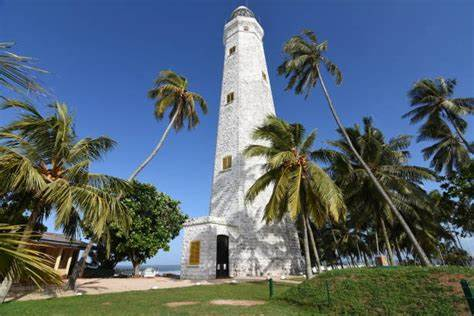
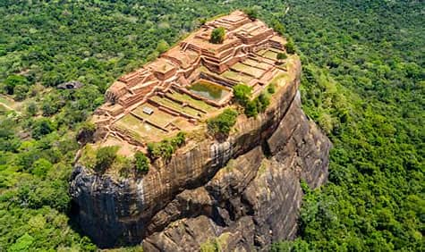
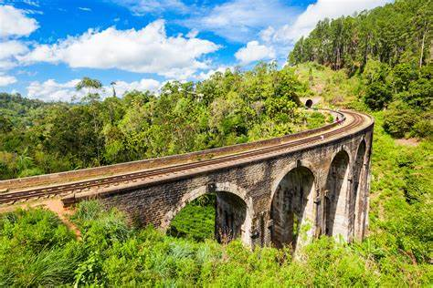
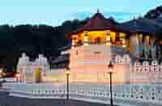
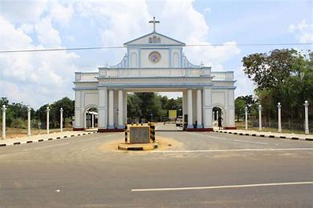
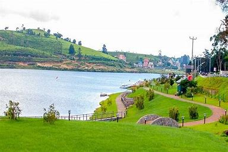
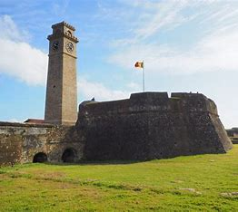
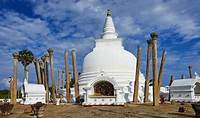

|

Dondra Head Lighthouse A historic lighthouse standing tall on the southern coast of Sri Lanka, symbolizing maritime history and resilience. |

Sigiriya An ancient rock fortress and UNESCO World Heritage site in central Sri Lanka, renowned for its fascinating frescoes and ancient ruins. |

Nine Arches Bridge A picturesque colonial-era bridge nestled amid the lush green hills of Sri Lanka, offering breathtaking panoramic views of the surrounding landscape |

Temple of the Tooth A revered Buddhist temple in Kandy, Sri Lanka, housing what is believed to be the sacred tooth relic of the Buddha, attracting pilgrims and tourists alike. |

Madu Church It is considered as the holiest Catholic shrine in the island and is a well-known place of devotion for both Tamil and Sinhalese Catholics |

Sinharaja Rain Forest A biodiverse tropical rainforest reserve in Sri Lanka, recognized as a UNESCO World Heritage site, known for its rich flora and fauna. |

Bopath Ella A serene man-made lake situated in Nuwara Eliya, Sri Lanka, offering scenic boat rides and a tranquil atmosphere amid picturesque landscapes. |

Gegrory Lake A serene man-made lake situated in Nuwara Eliya, Sri Lanka, offering scenic boat rides and a tranquil atmosphere amid picturesque landscapes. |

Galle Fort A well-preserved 17th-century Dutch fortification in Galle, Sri Lanka, characterized by its blend of European architecture, vibrant culture, and captivating ocean views. |

Anuradhapura An ancient city located in the north central province of Sri Lanka, Anuradhapura was once a thriving center of Buddhist civilization 3. |